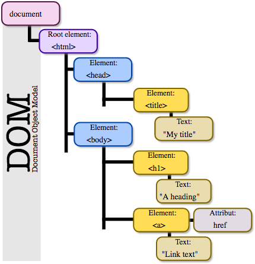
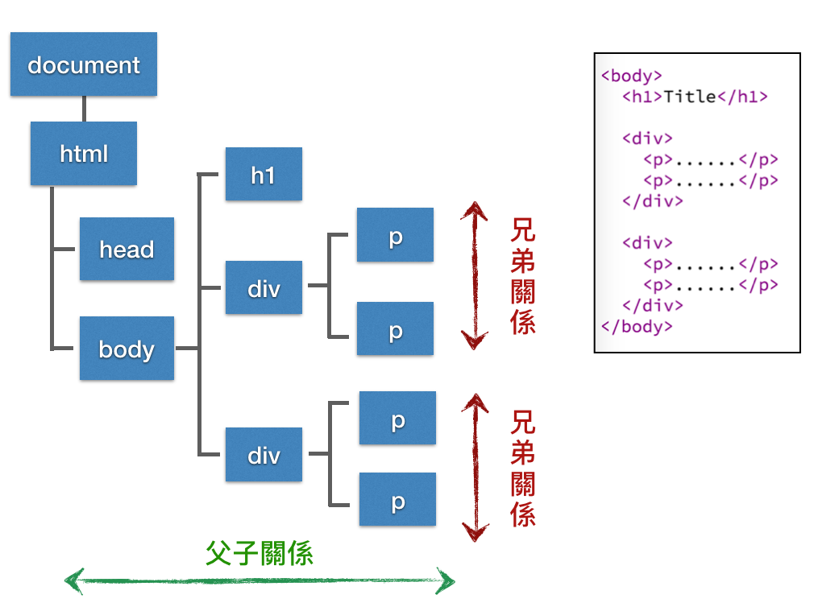

DOM (Document Object Model) 定義了一組標準 API (Application Programming Interface) 讓我們可以用 JavaScript 對 HTML 文件做操作。
DOM 將一份 HTML 文件看作是一個樹狀結構的物件，讓我們可以方便直觀的存取樹中的節點 (node) 來改變其結構、樣式 (CSS) 或內容等。
document 物件是 DOM tree 的根節點，表示整份 HTML 文件，通常你要存取 HTML 都是從 document 物件開始：

圖片來源： Wikipedia DOM
HTML DOM 規範中定義了這些類型的 API：
讓我們可以對 HTML 的元素 (element) 當作是 JavaScript 物件 (object) 來操作
定義了 HTML 元素有哪些屬性 (properties) 可以來做存取
定義了 HTML 元素有哪些方法 (methods) 可以來被操作
定義了 HTML 元素事件 (events)，讓我們可以針對特定元素來綁定事件處理函式 (例如使用者按下滑鼠、在鍵盤打字都是所謂的事件)
document.getElementById(id) 透過 id 取得一個 HTML 元素。
1 2 3 4 5 6 7 8 9 10 11 12 13 14 15 16 <!DOCTYPE html> <html> <body> <p id="demo">Click the button to change the text in this paragraph.</p> <button onclick="myFunction()">Try it</button> <script> function myFunction() { document.getElementById("demo").innerHTML = "Hello World"; } </script> </body> </html>
document.getElementsByTagName(name) 用來根據 HTML 標籤 (tag) 名稱取得所有這個標籤的元素集合 (HTMLCollection)，返回的結果是一個像陣列 (array) 的物件。
1 2 3 4 5 6 7 8 9 10 11 12 13 14 15 16 17 18 19 20 21 22 23 24 25 26 27 <!DOCTYPE html> <html> <body> <p>An unordered list:</p> <ul> <li>Coffee</li> <li>Tea</li> <li>Milk</li> </ul> <p>Click the button to display the innerHTML of the second li element (index 1).</p> <button onclick="myFunction()">Try it</button> <p id="demo"></p> <script> function myFunction() { var x = document.getElementsByTagName("LI"); document.getElementById("demo").innerHTML = x[1].innerHTML; } </script> </body> </html>
document.getElementsByName(name) 用來取得特定名稱 (name) 的 HTML 元素集合 (HTMLCollection)，返回的結果是一個像陣列 (array) 的物件。
1 2 3 4 5 6 7 8 9 10 11 12 13 14 15 16 17 18 19 20 21 22 23 <!DOCTYPE html> <html> <body> First Name: <input name="fname" type="text" value="Michael"><br> First Name: <input name="fname" type="text" value="Doug"> <p>Click the button to get the tag name of the first element in the document that has a name attribute with the value "fname".</p> <button onclick="myFunction()">Try it</button> <p id="demo"></p> <script> function myFunction() { var x = document.getElementsByName("fname")[0].tagName; document.getElementById("demo").innerHTML = x; } </script> </body> </html>
document.getElementsByClassName(names) 用來取得特定類別名稱 (class name) 的 HTML 元素集合 (HTMLCollection)，返回的結果是一個像陣列 (array) 的物件。
1 2 3 4 5 6 7 8 9 10 11 12 13 14 15 16 17 18 19 20 21 22 23 <!DOCTYPE html> <html> <body> <div class="example">First div element with class="example".</div> <div class="example">Second div element with class="example".</div> <p>Click the button to change the text of the first div element with class="example" (index 0).</p> <button onclick="myFunction()">Try it</button> <p><strong>Note:</strong> The getElementsByClassName() method is not supported in Internet Explorer 8 and earlier versions.</p> <script> function myFunction() { var x = document.getElementsByClassName("example"); x[0].innerHTML = "Hello World!"; } </script> </body> </html>
可以使用空白隔開多個 class name，元素必須有所有指定的 class name 才符合。例如：
1 2 3 document .getElementsByClassName('demo test' );
document.querySelector(selectors) 使用 CSS 選擇器 (CSS selectors) 來尋找符合條件且第一個找到的 HTML 元素。
1 2 3 4 5 6 7 8 9 10 11 12 13 14 15 16 17 18 19 <!DOCTYPE html> <html> <body> <h2 class="example">A heading with class="example"</h2> <p class="example">A paragraph with class="example".</p> <p>Click the button to add a background color to the first element in the document with class="example".</p> <button onclick="myFunction()">Try it</button> <script> function myFunction() { document.querySelector(".example").style.backgroundColor = "red"; } </script> </body> </html>
document.querySelectorAll(selectors) 使用 CSS 選擇器 (CSS selectors) 來尋找所有符合條件的 HTML 元素集合 (NodeList)。
1 2 3 4 5 6 7 8 9 10 11 12 13 14 15 16 17 18 19 20 21 22 23 24 25 <!DOCTYPE html> <html> <body> <h2 class="example">A heading with class="example"</h2> <p class="example">A paragraph with class="example".</p> <p>Click the button to add a background color all elements with class="example".</p> <button onclick="myFunction()">Try it</button> <p><strong>Note:</strong> The querySelectorAll() method is not supported in Internet Explorer 8 and earlier versions.</p> <script> function myFunction() { var x, i; x = document.querySelectorAll(".example"); for (i = 0; i < x.length; i++) { x[i].style.backgroundColor = "red"; } } </script> </body> </html>
DOM tree 節點間位置的相互關係 由於 DOM 節點有分層的概念，於是節點與節點之間的關係，我們大致上可以分成兩種：

圖片來源：重新認識 JavaScript: Day 12 透過 DOM API 查找節點 - iT 邦幫忙::一起幫忙解決難題，拯救 IT 人的一天
Node.childNodes 所有的 DOM 節點物件都有 childNodes 屬性 (read-only property)，可以用來取得該元素下的所有子元素集合 (NodeList)。
1 2 3 4 5 6 7 8 9 10 11 12 13 var demo = document.querySelector('#demo'); // 如果 node 內有子元素 if( demo.hasChildNodes() ) { // 可以透過 demo.childNodes[n] (n 為數字索引) 取得對應的節點 // 注意，NodeList 物件內容為即時更新的集合 for (var i = 0; i < demo.childNodes[i].length; i++) { // ... }; }
Node.childNodes 回傳的可能會有這幾種：
HTML 元素節點 (element nodes)
文字節點 (text nodes)，包含空白
註解節點 (comment nodes)
Node.children DOM 節點物件的 children 屬性和 childNodes 屬性類似，差異在於 childNodes 返回的子元素會包含文字節點 (text nodes) 和註解節點 (comment nodes)，children 屬性則只會返回 HTML 元素節點 (HTMLCollection)。
Node.firstChild Node.firstChild 可以取得 Node 節點的第一個 子節點，如果沒有子節點則回傳 null。
要注意的是，子節點包括「空白」節點，所以像下面範例：
1 2 3 4 5 6 7 8 9 10 11 12 <p> <span>span 1</span> <span>span 2</span> <span>span 3</span> </p> <script> var p = document.querySelector('p'); // tagName 屬性可以取得 node 的標籤名稱 console.log(p.firstChild.tagName); // undefined </script>
因為拿到的是 <p> 與第一個 <span> 中間的「換行字元」，所以 p.firstChild.tagName 會得到 undefined。
另一個例子：
1 2 3 4 5 6 7 8 9 10 11 12 <p id="demo"> <span>First span</span> </p> <script> var p = document.getElementById('demo'); // 會顯示 "#text"，因為第一個子元素是換行字元 alert(p.firstChild.nodeName); </script>
可以把第一個例子修改成以下：
1 2 3 4 5 6 7 8 <p><span>span 1</span><span>span 2</span><span>span 3</span></p> <script> var p = document.querySelector('p'); // tagName 屬性可以取得 node 的標籤名稱 console.log(p.firstChild.tagName); // "SPAN" </script>
把中間的換行與空白移除，就會得到預期中的 "SPAN" 了。
第二個例子修改方式也一樣：
1 2 3 4 5 6 7 8 9 <p id="demo"><span>First span</span></p> <script> var p = document.getElementById('demo'); // 會顯示 "SPAN" alert(p.firstChild.nodeName); </script>
Node.lastChild Node.lastChild 可以取得 Node 節點的最後一個 子節點，如果沒有子節點則回傳 null。
與 Node.firstChild 一樣的是，子節點包括「空白」節點：
1 2 3 4 5 6 7 8 9 <p id="demo"><span>First span</span><span>Second span</span><span>Last span</span></p> <script> var p = document.getElementById('demo'); // 會顯示 "Last span" alert(p.lastChild.innerHTML); </script>
Node.parentNode 透過 Node.parentNode 可以用來取得父元素，回傳值可能會是一個元素節點 (Element node)、根節點 (Document node) 或 DocumentFragment 節點。
1 2 3 4 5 6 7 8 9 10 11 <p> <span id="demo">my span</span> </p> <script> var elem = document.getElementById('demo'); // 會顯示 "P" alert(elem.parentNode.nodeName); </script>
Node.previousSibling 透過 Node.previousSibling 可以取得同層之間的「前一個」節點，如果 node 已經是第一個節點，則回傳 null。
1 2 3 4 5 6 7 8 9 <div><span id="s1">s1</span><span id="s2">s2</span></div> <script> // 會顯示 null alert(document.getElementById('s1').previousSibling); // 會顯示 "s1" alert(document.getElementById('s2').previousSibling.id); </script>
第二個例子：
1 2 3 4 5 6 7 8 9 10 11 <p><span>span 1</span><span>span 2</span><span>span 3</span></p> <script> var el = document.querySelector('span'); console.log( el.previousSibling ); // null // document.querySelectorAll 會取得所有符合條件的集合， // 而 document.querySelectorAll('span')[2] 指的是「第三個」符合條件的元素。 var el2 = document.querySelectorAll('span')[2]; console.log( el2.previousSibling.textContent ); // "span 2" </script>
Node.nextSibling 透過 Node.previousSibling 可以取得同層之間的「下一個」節點，如果 node 已經是最後一個節點，則回傳 null。
1 2 3 4 5 6 7 8 9 <div><span id="s1">s1</span><span id="s2">s2</span></div> <script> // 會顯示 "s2" alert(document.getElementById('s1').nextSibling.id); // 會顯示 null alert(document.getElementById('s2').nextSibling); </script>
第二個例子：
1 2 3 4 5 6 7 8 <p><span>span 1</span><span>span 2</span><span>span 3</span></p> <script> // document.querySelector 會取得第一個符合條件的元素 var el = document.querySelector('span'); console.log( el.nextSibling.textContent ); // "span 2" </script>
上面介紹的很多 DOM 查找方式會返回一個元素集合，是一個像陣列的物件 - 有 length 屬性、可以用 for 迴圈遍歷結果，雖然不能使用陣列型別的 method，但這兩種都可以用「陣列索引」的方式來存取內容。
而 NodeList 和 HTMLCollection 的差別在於，NodeList 包含任何的節點類型，除了 HTML element 節點，也包含文字節點、屬性節點等。HTMLCollection 則只包含 HTML 元素節點 (Element nodes) 。
像是 document.getElementsBy** (注意，有個 s) 以及 document.querySelectorAll 分別回傳 「HTMLCollection」 與 「NodeList」。
另一個需要注意的地方是，HTMLCollection / NodeList 在大部分情況下是即時更新 的，但透過 document.querySelectorAll 會回傳一個靜態的 NodeList。
1 2 3 4 5 6 7 8 9 10 11 12 13 14 15 16 17 18 19 20 <div id="outer"> <div id="inner">inner</div> </div> <script> // <div id="outer"> var outerDiv = document.getElementById('outer'); // 所有的 <div> 標籤 var allDivs = document.getElementsByTagName('div'); console.log(allDivs.length); // 2 // 清空 <div id="outer"> 下的節點 outerDiv.innerHTML = ''; // 因為清空了<div id="outer"> 下的節點，所以只剩下 outer console.log(allDivs.length); // 1 </script>
如果改成 document.querySelector 的寫法：
1 2 3 4 5 6 7 8 9 10 11 12 13 14 15 16 17 18 19 20 <div id="outer"> <div id="inner">inner</div> </div> <script> // <div id="outer"> var outerDiv = document.getElementById('outer'); // 所有的 <div> 標籤 var allDivs = document.querySelectorAll('div'); console.log(allDivs.length); // 2 // 清空 <div id="outer"> 下的節點 outerDiv.innerHTML = ''; // document.querySelector 回傳的是靜態的 NodeList，不受 outerDiv 更新影響 console.log(allDivs.length); // 2 </script>
參考文獻
https://ithelp.ithome.com.tw/articles/10191765
https://www.fooish.com/javascript/dom/
https://www.fooish.com/javascript/dom/traversing.html